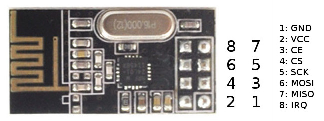

In this page we explain:
The main Arduino customization is based on Terra NET flavor for the Mega2560 platform using the NRF24L01+ radio board. Currently we tested Terra in two boards:
You will find in this page detailed informations about TerraIno specific events and functions.
Open a command terminal and execute the following commands.
sudo apt-get update
sudo apt-get install git lua5.1 lua-lpeg nescc gcc-avr avr-libc avrdude
sudo usermod -a -G dialout $USERNote: You must logout and login again to validate this new permission.
Clone Terra repository into home directory.
Open a command terminal, change to home directory, and download Terra repository.
cd ~
git clone https://github.com/afbranco/TerraThe next time use the command git pull from the new Terra dir to get last update
If necessary, adjust the paths inside Makefile_ino file.
Open a command terminal and change to src directory
cd ~/Terra/TerraVM/srcOpen the file Makefile_ino in the editor.
gedit Makefile_inoModify the following definitions according to your installation options.
If your environment already has an Arduino installation,
please find the correct Arduino path and modify the following definitions.
(tip: the command: locate tools/avr/bin/avr-gcc will help you to find the correct path.)
AVR_TOOLS_PATH = found_tools_path
OBJCOPY = $(AVR_TOOLS_PATH)/avr/bin/avr-objcopy
OBJDUMP = avr-objdump
GCC = $(AVR_TOOLS_PATH)/avr/bin/avr-gcc
AVRDUDE = $(AVR_TOOLS_PATH)/avrdude
AVRDUDECONF = $(AVR_TOOLS_PATH)/avrdude.conf
If you do not have Arduino installed, you must edit the definitions to:
OBJCOPY = avr-objcopy
OBJDUMP = avr-objdump
GCC = avr-gcc
AVRDUDE = avrdude
AVRDUDECONF = /etc/avrdude.conf
Open a command terminal and change to HOME directory
cd ~Open the file .bashrc in the editor.
gedit .bashrcInsert following lines at the end of the file.
export TERRADIR=$HOME/Terra
export CLASSPATH=$TERRADIR/TerraControl/tinyos.jar:.$CLASSPATH
alias terrac='$TERRADIR/terrac/terrac -I$TERRADIR/TerraVM/src/TerraDefs'
alias ttool='java -jar $TERRADIR/TerraControl/TControl.jar'
alias sf='java net.tinyos.sf.SerialForwarder'
Open a new command terminal to get the new environment.
After a successful installation, you can generate a compiled file and flash it into an Arduino Mega board.
Terra development environment uses a Make system to build and install the firmware.
You must change to the $HOME/Terra/TerraVM/src directory and execute make mega
command with additional parameters.
The follow command is an example of Terra compilation for Arduino Mega board:
make mega TYPE:BOTH VM:NET MOD:MSGQ USB:/dev/ttyACM0 BS_BAUD:19200 install.4
We must pay attention for some details when compiling and installing Terra for Arduino Mega.
The TYPE:type parameter indicates if your node will communicate via USB interface (BOTH) or not (NOBS). Usually one node, acting as BaseStation or sink node, is connected to a computer via USB interface when the all nodes communicate via radio. Hybrid networks may create a bridge connecting two node with different radios via serial/USB interface.
the BS_BAUD:value configures the USB baud rate for Terra operation. (This does not change the firmware flashing baud rate that is configured internally in the system.)
the INSTAL.n parameter indicates to flash the compiled file. The n is the unique node identifier for its network.
The real node address is the combination of the Network ID and the unique node identifier.
For example, the default Network Id for the NRF24 network is the number 3.
The node address, considering the unique ID 1, will be (3*2048)+1 = 6145.
The USB:path identifies the USB connected to flash the Mega Board.
This value is usually /dev/ttyACM0 or /dev/ttyUSB0,
this depend on the FDDI chip used in the board.
But its number may change if the previous connection is already allocated.
Use the command ls /dev/ttyA* or ls /dev/ttyU* to find the correct port.
The INO_RADIO:radio defines the radio board used in the node. Only the NRF24 value was fully tested in the last Terra version. Use the option NO_RADIO in the case you are not using a radio board, i.e. your Arduino Mega communicates only by the USB interface.
These are the allowed parameters when compiling for Arduino Mega board.
The command make help mega will show an updated definition.
Terra scripts rely on a definition file targeting a specific customization.
In the case of Arduino, the TerraIno.defs file is the the basic customization.
This file must be referenced in the begining of your script code as #include "TerraIno.defs".
Use the command terrac to compile your script.
Assuming that the name of your script file is myScript.terra, type the following command:
terrac myScript.terraThis command will generate a bytecode file named myScript.vmx
Considering that you already have a script compiled with terrac compiler,
you need to load the script bytecode into the Terra network nodes.
Two tools must be started to that. The TinyOS SerialForwarder application and the Terra Control tool.
The use of the Terra Control tool was explained in the Terra tutorial.
The tool can be started by ttool command.
After started, the tool waits for the SerialForwarder to connect to the USB.
The SerialForwarder is started by sf -comm serial@path:baud command,
where path is the path to the USB interface
and baud is the baud rate indicated in the BS_BAUD parameter.
The next figure shows the NRF24L01+ pin-out and the table shows the connections for Arduino Mega and MegaCore.
| NRF24 | Arduino Mega | MegaCore |
|---|---|---|
| 1 - GND | GND | GND |
| 2 - VCC 3.3v | 3.3v | 3.3v (external) |
| 3 - CE | Digital pin 11 | PB5 |
| 4 - CS | Digital pin 10 | PB4 |
| 5 - SCK | Digital pin 52 | PB1 |
| 6 - MOSI | Digital pin 51 | PB2 |
| 7 - MISO | Digital pin 50 | PB3 |
| 8 - IRQ | Digital pin 2 | PE4 |